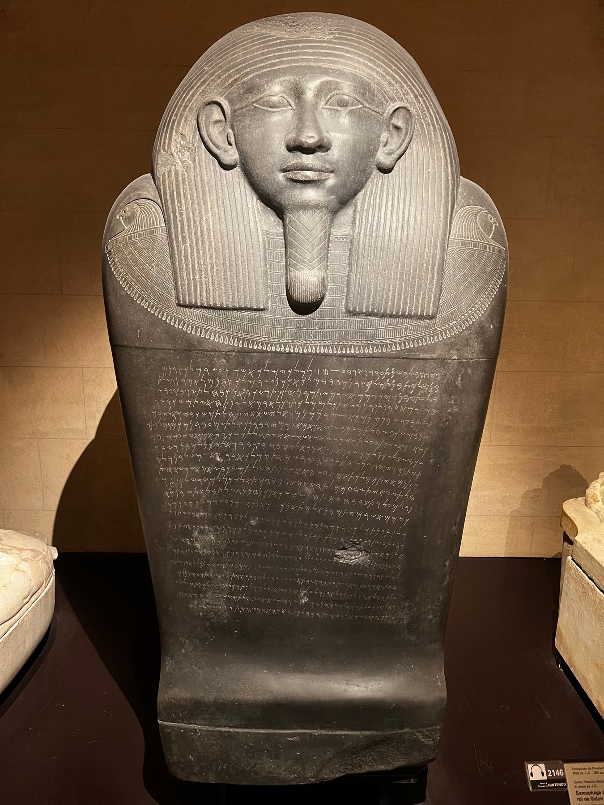

Eshmunazar II Sarcophagus

An Egyptian-made amphibolite sarcophagus (2.56 x 1.25 m) of Eshmunazar II, Phoenician king of Sidon (reigned about 539-525 BC, son of Tabnit), discovered in January 1855 at the Magharat Abloun (Cavern of Apollo) necropolis near Sidon. Its 22-line Phoenician inscription (KAI 14) is the first Phoenician-language inscription discovered in Phoenicia proper and the most detailed found up to that point. It is now in the Louvre (AO 4806).
Interpretations
The inscription, in a Canaanite dialect mutually intelligible with Biblical Hebrew, records that the 'Lord of Kings' (the Persian king) granted the Sidonian kings Dor, Joppa, and the Plain of Sharon, coastal cities that appear in Joshua and Jonah. The sarcophagus was likely carved in Egypt from Wadi Hammamat stone and possibly captured as booty in Cambyses II's 525 BC conquest of Egypt. Sources differ on the discovery day (19 vs 20 January 1855), so only 'January 1855' is given.
Scripture Illuminated
Biblical Significance
It documents Persian-period Phoenician control of Dor and Joppa, two coastal cities named in Joshua and Jonah, in a language closely akin to Biblical Hebrew.
https://cojs.org/sarcophagus_of_king_eshmunazar-_5th_century_bce/